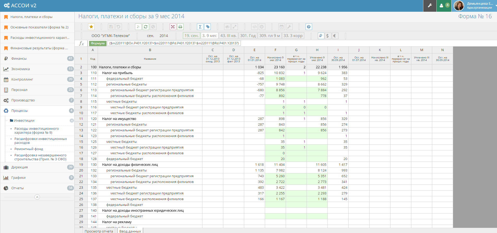
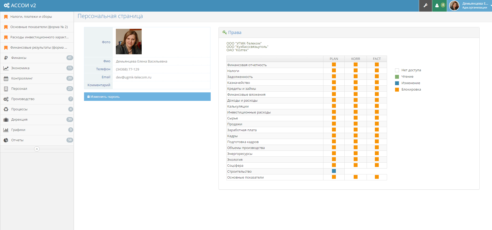
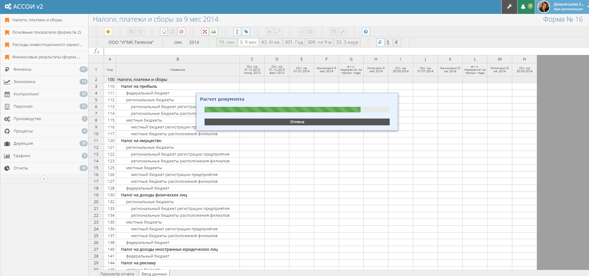

		<div class="page portfoliomodal4" id="portfoliomodal4" tabindex="-1" role="dialog" aria-hidden="true">
			<div class="1modal-content">
				<div class="close-modal" data-dismiss="modal">
					<div class="lr">
						<div class="rl">
						</div>
					</div>
				</div>
				<div class="container">

					<!-- Project Details Go Here -->
					<h2>УГМК холдинг, ERP-система</h2>
					<p class="item-intro">OLAP-инструмент для финансового планирования, моделирования, бюджетирования, аналитики и отчетности.
					</p>
					

					<h4>Оптимизация и апгрейд системы управления данными холдинга</h4>
					<p>
						Система удаленно собирает качественные и количественные показатели в различных срезах деятельности.
						Визуализация гибко настраивается.
						Используется на предприятиях холдинга (почти 50 предприятий в 11 регионах России и за рубежом).
					</p>

					<h4>Свой Excel с джеттехом и плюхами</h4>
					<p>УГМК — огромное предприятие, и это требует инструментов, заточенных под предметную область. Существующая система требовала основательной оптимизации и обновления.
						Мы сделали новый язык программирования и несколько хитрых штуковин для него. </p>

					<h4>Свой язык</h4>
					<p> Используя конструктор Jison, мы перевели набор внутренних формул предприятия в собственный предметно-ориентированный язык программирования</p>

					<h4>Суперкалькулятор</h4>
					<p>Специальный калькулятор, основаный на нашем языке, позволяет считать все метрики предприятия,
						создавать вычислительные цепочки привязанные к десяткам факторов. Это даёт возможность моделировать процессы,
						прогнозировать прибыли и оправданность инвестиций, и другое.</p>

					<h4>Права доступа</h4>
					<p>
						<!--Каждый документ и сотрудник имеют уровни доступности и доступа настраиваемые 28 параметрами.-->
						Мы сделали гибко настраиваемый уровень доступа для каждого сотрудника к данным предприятия. </p>
					

					<h4>Языковой анализатор</h4>
					<p>Синтаксические ошибки в документе вызывали неразбериху и длительный поиск незакрытой скобки.
						Теперь выявление ошибок происходит на этапе написания формулы.
						Результат — экономия кучи времени на исправлении ошибок</p>

					<p> Затрачено <strong style="font-size:200%">2,355</strong> человеко-часов </p>
					<p> <strong style="font-size:200%">379</strong> задач решено</p>
					<p> Время генерации документа снизилось в <strong style="font-size:200%">3000</strong> раз</p>
					<p> <strong style="font-size:200%">0</strong>. Поиск ошибок не занимает времени.</p>


					

					<ul class="list-inline">
						<li>Дата: Июль 2014</li>
						<li>Клиент: УГМК</li>
						<li>Категория: ERP-система</li>
					</ul>
					<a type="button" class="btn btn-closemodal"><i class="fa fa-times"></i> Закрыть</a>

				</div>
			</div>
		</div>
